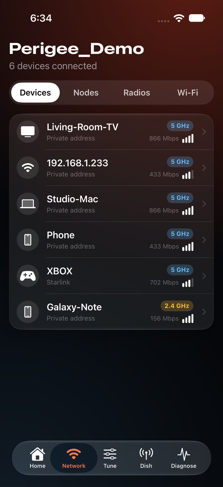
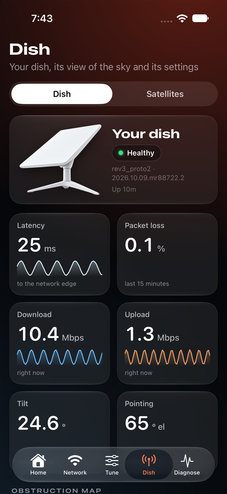
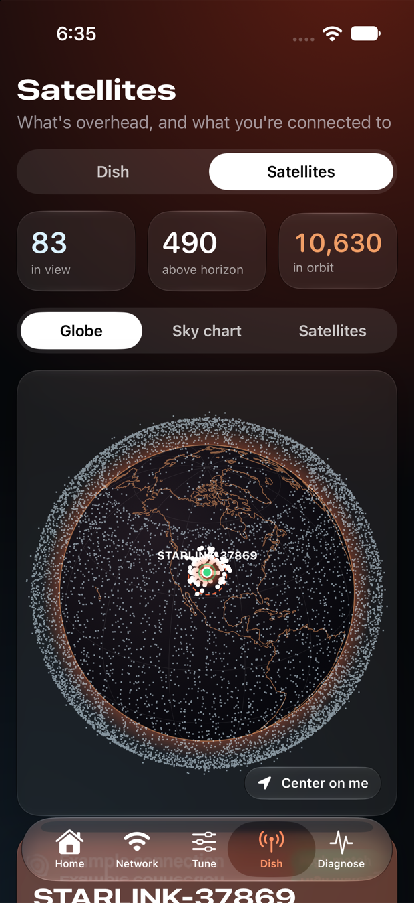
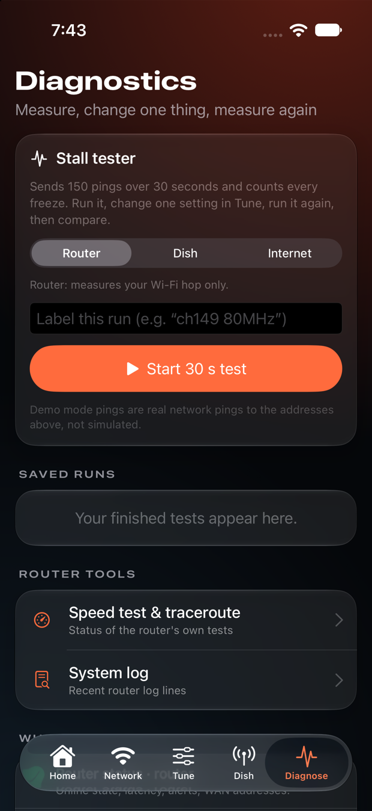

The official app hides the settings that actually fix stalls. Perigee talks to your router and dish over the local network, shows what's really happening, and lets you tune it — safely, one verified change at a time.
Cloud gaming exposes what speed tests hide: a ~1 second freeze every few seconds, a little packet loss, a router radio quietly dropping frames. Starlink's own app can't change the channel, width, DFS, or queueing that cause it. The router can — its local API just isn't surfaced anywhere.
Perigee's stall tester finds exactly this — then helps you fix it and prove it.
Where your router allows it. Channel, width, wireless mode, TX power, DFS, band steering, DNS and CAKE queueing — per band, with plain-language effects, presets (Gaming · Balanced · Max throughput) and one-tap revert.
A 30-second, 150-probe ICMP test counting loss, p95 and stall episodes. Save runs, then A/B them with charts to see whether your change actually helped.
Per-band frame-error rate, antenna RSSI, temperature and airtime — turned into verdicts like “Dropping frames (1.8%) — try another channel.”
A live 3D globe of the whole constellation, which satellites your dish can see, and the one it's most likely connected to.
The dish's view of the sky, history graphs, snow melt, sleep schedule, update window and tilt — with slide-to-confirm for stow.
Every client with band, RSSI, link rate and history. Rename devices. Wi-Fi passwords stay masked behind Face ID / Touch ID.




Perigee propagates all ~10,000 Starlink satellites on your device (full SGP4, verified against the standard reference vectors), draws them on a 3D globe with coastlines, and highlights the ones above your horizon.
The router's config protocol needs an apply_<field> flag for every write. Perigee sets exactly one field plus its flag — never a copy of the whole config — then re-reads to prove it took.
apply_ flag. Nothing else.Every launch starts locked. A visible switch enables writes, and a banner shows while it's on.
Every request is classified by name. Auth, signing, debug, test-mode, factory and firmware methods can never be sent. Unknown methods are blocked.
Reboot and stow need writes enabled and a completed slide — enforced in the transport, not just the UI.
| Call | Over the LAN | Used for |
|---|---|---|
get_status, wifi_get_clients, wifi_get_config, get_radio_stats, get_history | works | Dashboard, devices, tuning, radios, graphs |
dish_get_config, dish_get_obstruction_map, dish get_status | works | Dish screen, obstruction map, pointing |
wifi_get_channels, wifi_get_ping_metrics, wifi_get_traceroute_status | PermissionDenied | Channel survey & traceroute — Perigee explains this and uses airtime counters instead |
dish get_location | Disabled by policy | Perigee asks for your device location for the sky view |
You need Xcode 16+ and your Starlink router on the same network. No account, no cloud, no telemetry.
git clone https://github.com/noktirnal42/perigee
cd perigee
open Perigee.xcodeproj
# pick the Perigee_iOS or Perigee_macOS scheme, ⌘R
# no hardware handy? launch with sample data
# Settings → Data source → Demo dataNo. Perigee is an independent, open-source companion. It isn't made, endorsed or supported by SpaceX or Starlink, and uses none of their logos or artwork.
It's designed not to: writes are off by default, limited to documented single-field config changes, verified after sending, and revertible. Factory-reset, firmware and debug calls are blocked in code. Even so, changing Wi-Fi settings can briefly drop your devices — you're always warned first.
Some routers only accept configuration writes from Starlink's own authenticated app, not from the local network. Perigee detects the refusal, explains it, stops retrying, and switches that device to view-only. You still get live status, radio health, the stall tester and A/B comparison, plus a shareable plan of recommended settings to apply on your own router. Perigee will never try to authenticate or bypass the refusal.
The router refuses those calls from the local network (PermissionDenied). Perigee detects that at runtime, tells you plainly, and works around it where it can.
It doesn't know — it infers. The dish reports its boresight azimuth/elevation; Perigee computes where every satellite is right now and picks the closest. You get a confidence rating and the raw angular separation.
Only a public download of satellite orbital data from CelesTrak (no personal data). Your location, Wi-Fi details and test results stay on your device.